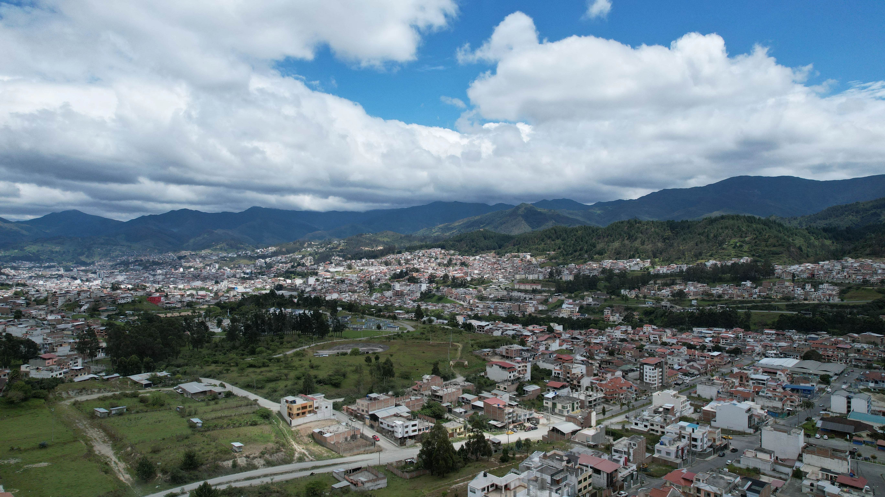
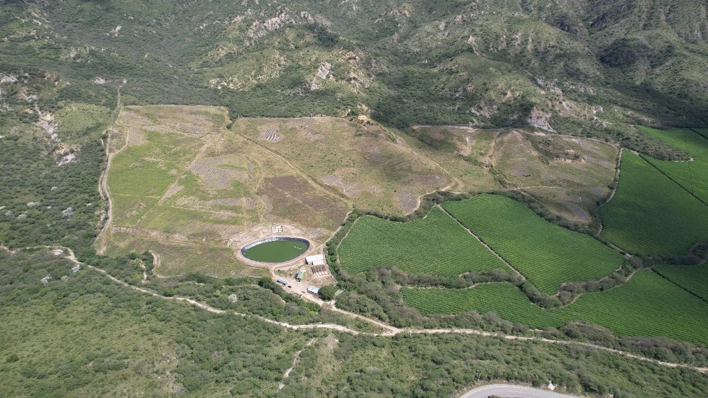

Proyectos
Explora mis proyectos en geomática y agricultura.

Proyecto GIS
Análisis espacial con herramientas GIS.

Proyecto Teledetección
Uso de imágenes satelitales para monitoreo ambiental.

Análisis de Datos
Modelos predictivos y análisis estadístico.